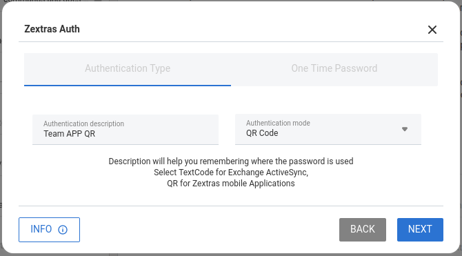

Note
All content is provisional and is meant only to showcase the feature of the new framework.
Zextras Auth
What is Zextras Auth
Zextras Auth is the Zextras Suite module that influences the process of accessing a Zextras instance from the Login Page onwards, including:
The access modality. Depending on the authentication backends configured, the access mask changes, to allow user to provide their credentials using any of the backends. This also is reflected in the Auth Zimlet.
Customisations. How the login page looks like. See the dedicated section for a list of customisable items.
Zextras Auth allows to manage all the Authentication Strategies (user/pwd, SAML, 2FA, MobilePwd, QrCode) and Service Authorizations supported by Zextras.
This section is divided in three main parts and organised as follows. Immediately below, you can find the description of all supported authentication methods; the next two sections are dedicated to administration tasks, which require privileged access and are mostly carried out from the CLI, and everyday’s task, which can be carried out from the Web GUI by both administrators and users, respectively. Finally, the list of all CLI commands is given as a reference, with link to each command.
Supported Authentication Methods
Zextras Auth supports the following backends:
Self service credentials management
Mobile password management
Application password
Custom login page
SAML integration
2FA Authentication using OTP token
Credential Management by CLI
Self Service Credentials Management
Self-service credential management allows every user to create new passwords and QR codes for third-parties—for example team members, personal assistants—accessing her/his email account and Zextras Applications from mobile devices.
QR Codes in particular can be used to access Zextras Apps, currently Team and Drive.
More information and step by step guidelines can be found in Section ZxAuth for users (Auth Zimlet).
Custom Login Page
All Zextras functionality can be accessed upon login from the login page of Zextras, which can be customised in several parts, for example to add the company’s logo or other elements of the company’s corporate identity.
This feature is carried out from the CLI and therefore requires administrator privileges; more information and guidelines in section Custom Login Page.
SAML
The Security Assertion Markup Language (SAML) is an XML-based open standard data format for exchanging authentication information. It enables web-based authentication and authorization scenarios including cross-domain Single Sign-On (SSO), which allows the use of the same credentials to access different applications.
SAML implementation in Zextras relies on an external IDentity Provider (IDP), to which a user identifies; the IDP then passes authorization credentials to a service providers (SP). SAML authentication is the process of verifying the user’s identity and credentials. In Zextras Suite, SAML requires little configuration, because an administrator can generate the SAML configuration by importing SAML metadata from the ISP. Each domain can have a different SAML endpoint and both SDP and IDP SAML authentication is supported.
These are the key concepts of SAML authentication:
- Service Provider
(SP) is the entity providing the service.
- Identity Provider
(IdP) is the entity providing the identities.
- SAML Request
is generated by the Service Provider to “request” an authentication.
- SAML Response
is generated by the Identity Provider and contains the assertion of the authenticated user.
Moreover, the Assertion Consumer Service (ACS) endpoint is a location to which the SSO tokens are sent, according to partner requirements.
Directions on how to configure SAML and integrate other applications in Zextras Suite is described in Configuring SAML in Zextras Suite.
Two Factor Authentication
Two Factor Authentication (usually spelled as 2FA) adds a security layer to the login phase, making unwanted accesses less likely to take place. In Zextras, this additional layer is given by an One Time Password (OTP), which can be read as a QR code on mobile devices.
When 2FA is configured on a Zextras domain, it is mandatory to have an
OTP to be able to login: providing only username and password will fail.
Moreover, the attribute zimbraAuthMech must be configured on the
domain with for 2FA to work properly.
2FA applies only to those protocols or apps supporting it, for example
HTTP and HTTPS but not to IMAP and SMTP, and can be configured at either
device, IP, or IP range level, by means of the trusted_device or
trusted_ip parameter. When an IP or IP range is trusted, 2FA will be
successful for any login originating from there, while the
trusted_device requires that the same browser or app be used,
otherwise it will fail: if a 2FA login is carried out on Chrome,
accessing the same page with Firefox will require a new login.
In order to use the OTP, a domain must be configured (see QR Code Requirements) by the site admin, while users can configure it using the Auth Zimlet.
See also
Community Article
https://community.zextras.com/improve-the-security-using-zextras-2fa/
This article showcases a few deployment scenarios of 2FA in Zextras and describes how Administrators can take advantage of such architecture.
ZxAuth for Admins
This section is dedicated to administrators and the activities they can carry out to manage and maintain Zextras Auth. Here administrators can find the requirements for the various authentication methods, then the installation instructions. Credential management follows, with the option to customise the login page at the end.
Requirements
QR Code Requirements
The QR Code Application Password feature requires the following properties to be set at domain level in order to be functional:
zimbraPublicServiceHostnamezimbraPublicServicePortzimbraPublicServiceProtocol
Should one or more of the properties be unset, a notification will be delivered to the Admin reporting the affected domains and their missing properties.
2FA Requirements
In order to properly have 2FA set up, the zimbraAuthMech attribute
bust be configured at domain level:
zmprov modifyDomain example.com zimbraAuthMech custom:zx
To enable 2FA it is also necessary to:
Enter the addresses of all mailbox and MTAs as ‘ZimbraMailTrustedIp’
A ‘trusted ip range’ must be defined for all services
For all services the ‘ipcanchange’ attribute must be validated on ‘true’ and ‘trustedDevice = 1’
Important
2FA requires a specific zimbraAuthMech and this make it not compatible with other mechanism such as ldap, ad or kerberos5
SAML Requirements
Before enabling SAML login, it is necessary to modify the Zextras Backend processing, because these header attributes are required to compose the complete URL request: Protocol X and X-Port.
The files affected by this change are the templates:
nginx.conf.web.http.default.templatenginx.conf.web.http.templatenginx.conf.web.https.default.templatenginx.conf.web.https.template
In each of them, the location ^~ /zx/ code should be changed:
location ^~ /zx/
{
proxy_set_header X-Forwarded-For $proxy_add_x_forwarded_for;
proxy_set_header Host $http_host;
proxy_set_header X-Forwarded-Proto $scheme;
proxy_set_header X-Forwarded-Port $server_port;
proxy_pass ${web.upstream.zx};
}
Installing the Zextras Auth Zimlet
To deploy the Zextras Auth Zimlet, simply run zxsuite auth
doDeployAuthZimlet as the zimbra user on any mailbox server of your
infrastructure.
Custom Login Page
The Auth module provides the ability to customise the Login Page as it is seen by other user.
The login page can be set at domain level and customized in terms of title, logo, background and favicon.
Enabling the Login Page
To enable the Login Page for a domain (we use example.com), set the
zimbraWebClientLoginURL and zimbraWebClientLogoutURL
configuration keys. You can do so from the GUI by adding the following
two values:
Web client login redirect URL: /zx/login/page/?domain=example.com
Web client logout redirect URL: /zx/auth/logout/
The same action can be done by using the following CLI command, which
configures also the authentication method (zimbraAuthMech):
zmprov md example.com zimbraAuthMech custom:zx zimbraWebClientLoginURL /zx/login/page/?domain=example.com zimbraWebClientLogoutURL /zx/auth/logout/
Customizing the Login Page
The Login Page can be customized through the use of the loginPage
Auth CLI command.
Image File Locations and Sizes
Zextras Auth offers two options for custom image files used by the Login Page, either by embedding remote image files or hosting them locally. Image files can be used for logo, background, and favicon.
Remote File. The image is available on a public online resource (like, e.g., a corporate server or a hosting service) and can be directly accessed. When adopting this approach, use the full URL to the resource in the CLI command, for example:
https://www.example.com/resources/logo.png
Hint
This is the preferred alternative.
Local File. The image is hosted locally and must be stored in a directory under
/opt/zimbra/jetty/webapps/zimbra/public/. When configuring it, the relative path to the file from the/opt/zimbra/jetty/webapps/zimbra/base path must be used. If the file is saved as/opt/zimbra/jetty/webapps/zimbra/public/logo.png, then use/public/logo.png
The optimal size for a logo image is 320x80. Other sizes can be used but the logo image could be stretched or scaled resulting in poor quality. The aspect ratio of 4:1 should always be maintained.
While the optimal size for the background image depends on the resolution of the client’s screen, it’s stongly advised to avoid images smaller than the current standard monitor resolutions to avoid vertical or horizontal bars to be displayed on screens with a bigger resolution than the background image.
Login Page Title
The login page title can be modified by using either of the following commands:
global level zxsuite auth loginPage setTitle global
zxsuite auth loginPage setTitle global ‘My Custom Login Page’
domain level zxsuite auth loginPage setTitle domain
zxsuite auth loginPage setTitle domain domain ‘My Custom Login Page’
Viewing the current configuration
The current Login Page settings for a domain can be viewed by using the zxsuite auth loginPage getConfig domain command:
~$ zxsuite auth loginPage getConfig domain example.com
zimbraPublicServiceHostname mail.example.com
loginPageBackgroundImage /public/background.jpg
zimbraPublicServicePort 443
zimbraPublicServiceProtocol https
zimbraDomainName example.com
publicUrl https://mail.example.com
loginPageLogo /public/logo.png
Configuring SAML in Zextras Suite
Importing SAML Configuration
You can integrate a SAML application in Zextras in two ways — automatic and manual. The following sections describe each method in detail.
Import SAML Configuration Automatically
To integrate a SAML application into Zextras automatically, you need to configure the IDP using the Zextras SAML SDP data, which can be obtained from the following URI:
https://ZIMBRA_PUBLIC_URL/zx/auth/samlMetadata?domain=example.com
Here, ZIMBRA_PUBLIC_URL is the URL of the Zextras instance and example.com is the domain for which you want to enable SAML.
Above all, the following parameters must be taken into account:
“sp.nameidformat”: “urn:oasis:names:tc:SAML:1.1:nameid-format:emailAddress “,
“sp.entityid”: >>https://ZIMBRA_PUBLIC_URL/zx/auth/samlMetadata?domain=example.com<<,
“sp.assertion_consumer_service.url”: >>https://ZIMBRA_PUBLIC_URL/zx/auth/saml<<,
Once the IDP is configured and you have the IDP metadata URL, you can import the configuration using the command (assuming the IDP metadata are in https://localidp.local.loc/simplesamlphp/saml2/idp/metadata.php):
zxsuite auth saml import example.com URL https://localidp.local.loc/simplesamlphp/saml2/idp/metadata.php
If the IDP is using an unsecured connection or a self signed certificate, the command will be this:
zxsuite auth saml import example.com url https://localidp.local.loc/app/xxxxxxxxxxxxxxx/sso/saml/metadata allow_insecure true
You are now DONE! You can see the SAML button.
Import SAML Configuration Manually
If you need to manually edit the SAML configuration, you can:
Export the default SAML settings using:
zxsuite auth saml get example.com export_to /tmp/saml.json
Open the resulting file /tmp/saml.json in any editor and modify the requested attributes
entityid
assertion_consumer_service.url
nameidformat
Save the changes made to the file and import it into Zextras Suite using the command:
zxsuite auth saml import example.com /tmp/saml.json
Hint
It is also possible to view or edit single attributes by
using the zxsuite auth saml get and zxsuite auth saml set
command options.
ZxAuth for users (Auth Zimlet)
Zextras Auth features a dedicated zimlet to manage all user-side credential and features, such as the EAS Mobile Password, Mobile App QR Codes, and OTP for Two Factor Authentication.
Zextras Auth Zimlet overview
The Zextras Auth Zimlet can be accessed from the “Zimlets” section of the Zimbra Web Client. Users do not need any CLI access to use the Zextras Auth.
The creation of a new credential allows to give access to the account, possibly including the Zextras Mobile Apps, to other persons without having to share the personal credentials.

From the zimlet, the user can:
Add new credentials by clicking on either Authentication Type (for text codes and QR codes) or One Time Password
Check the status and other information for every Authentication Type created. Each entry of the list displays the label of the password, its status, the service it is valid for, and its creation date.
Check the status and other information for every One Time Password. Here, each entry shows a description, its status, the failed attempts, and its creation date.
Manage the 2FA access. Each user can decide whether to enforce access using 2FA, unless its use has been enabled or disabled at COS, domain, or global level. In this case, only a greyed-out checkbox is shown.
Delete any credential created, by simply selecting it and clicking on the DELETE button
Important
Users can in no case modify their assigned credentials, change the password of credentials they generate, or modify any property of the credential. Limited editing of a credential is strictly limited to the administrators.
In the remainder of this section, we give an overview of the various possibilities.
Create New Credentials: Text Code
To create a new Mobile Password (for EAS service), open the Zextras Auth Zimlet and click on Authentication type, then on NEW AUTHENTICATION.
Here, enter an easy to remember identifier for the password in the Authentication description field and select Text code as the Authentication mode:

Click Next. The new Mobile Password will be displayed:

Click on the small blue icon on the right-hand side of the password to copy it to the clipboard.
Warning
Mobile Passwords are randomly generated and cannot be displayed again after the creation is complete.
Click on DONE to close the Zextras Auth window. An entry for the new Mobile Password is now visible in the Active Passwords list of the Zextras Auth Zimlet.
Create New Credentials: QR Code
Zextras Auth can speed up and manage Zextras Application logins, such as those for the Team App and Drive App.
This is achieved through the creation of a QR Code, which the user can then scan from the App’s login page to log in. The procedure is very similar to the one described in the previous section.
Warning
QR Codes are a one-time credential only, meaning that once generated it will grant access to the app until the relevant credential itself is deleted from the account. Once generated, the QR Code can only be viewed once.
In order to create a new QR Code for Mobile Application, open the Zextras Auth Zimlet and click on Authentication type, then on NEW AUTHENTICATION.
Here, enter an easy to remember identifier for the password in the Authentication description field and select QR code as the Authentication mode:
Click Next. The QR code for Mobile Application will be displayed:

Use the Zextras mobile app to frame the code and grant access to the app.
Warning
QR Codes are randomly generated and cannot be displayed again after the creation is complete.
Click on DONE to close the Zextras Auth window. An entry for the new Mobile Application is now visible in the Active Passwords list of the Zextras Auth Zimlet.

Create New Credentials: OTP
In order to create a new QR Code for One Time Password access, open the Zextras Auth Zimlet and click on One Time Password, then on NEW OTP.

No additional step is required, you will be presented with the QR code and a list of PIN codes to be used for authentication.

Click on the small blue icon on the right-hand side of the PIN list to print the codes on paper or to a file.
Warning
QR codes and their associated PINs are randomly generated and cannot be displayed again after the creation is complete.
Click on DONE to close the Zextras Auth window. An entry for the new OTP entry will be shown in the list.
Note
The Description is automatically created using the email address to which it is associated.

Delete Credentials
In order to delete a credential, simply select it from the list of Active passwords or OTPs, and click on the DELETE button:

Click on YES to confirm the removal of the credential.
Zextras Auth CLI
This section contains the index of all the available zextras auth
commands. Full reference can be found in the dedicated
section.
credential add | credential delete | credential list | credential update | doDeployAuthZimlet | doRestartService | doStartService | doStopService | enforce2FA get account | enforce2FA get cos | enforce2FA set account | enforce2FA set cos | getServices | loginPage getBackgroundImage domain | loginPage getBackgroundImage global | loginPage getColorPalette domain | loginPage getColorPalette global | loginPage getConfig domain | loginPage getConfig global | loginPage getFavicon domain | loginPage getFavicon global | loginPage getLogo domain | loginPage getLogo global | loginPage getSkinLogoAppBanner domain | loginPage getSkinLogoAppBanner global | loginPage getSkinLogoURL domain | loginPage getSkinLogoURL global | loginPage getTitle domain | loginPage getTitle global | loginPage setBackgroundImage domain | loginPage setBackgroundImage global | loginPage setColorPalette domain | loginPage setColorPalette global | loginPage setFavicon domain | loginPage setFavicon global | loginPage setLogo domain | loginPage setLogo global | loginPage setSkinLogoAppBanner domain | loginPage setSkinLogoAppBanner global | loginPage setSkinLogoURL domain | loginPage setSkinLogoURL global | loginPage setTitle domain | loginPage setTitle global | policy list domain | policy list global | policy set Cli domain | policy set Cli global | policy set Dav domain | policy set Dav global | policy set EAS domain | policy set EAS global | policy set Imap domain | policy set Imap global | policy set MobileApp domain | policy set MobileApp global | policy set Pop3 domain | policy set Pop3 global | policy set Smtp domain | policy set Smtp global | policy set WebAdminUI domain | policy set WebAdminUI global | policy set WebUI domain | policy set WebUI global | policy set ZmWebUI domain | policy set ZmWebUI global | policy trustedDevice getExpiration domain | policy trustedDevice getExpiration global | policy trustedDevice setExpiration domain | policy trustedDevice setExpiration global | saml delete | saml get | saml import | saml update | saml validate | token invalidate | token list | totp delete | totp generate | totp list | trustedDevice delete | trustedDevice list